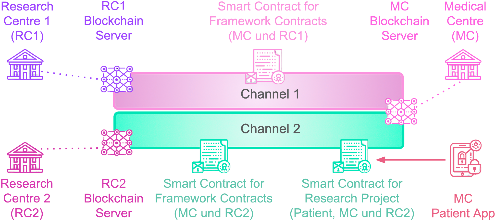

HyperAccess: Blockchain-Based Trust System for Medical Data Access
HyperAccess is a blockchain-powered trust system designed to digitize, streamline, and secure medical data-sharing agreements between hospitals, research institutions, and ethics boards. Built on Hyperledger Fabric, it ensures data integrity, privacy, and compliance with regulations like GDPR, allowing patients to control and audit access to their medical records in a transparent and verifiable manner
Problem Statement
In the traditional healthcare system, medical data-sharing between hospitals, researchers, and ethical boards is often inefficient, slow, and vulnerable to security risks. Paper-based agreements and centralized storage mechanisms increase bureaucracy, introduce security loopholes, and fail to ensure full patient control over data access.
Key Features
GDPR-Compliant Smart Contracts
Permissioned Blockchain
Auditability & Trust
Automated Contract Generation

Technology Stack
Blockchain: Hyperledger Fabric
Backend: Node.js, Hyperledger Fabric SDK
Smart Contracts: Chaincode (Go, JavaScript)
Database: CouchDB
Frequently Asked Questions
HyperAccess is a blockchain-based system designed to facilitate secure and transparent medical data-sharing between hospitals, research institutions, and ethics boards. It ensures privacy, compliance, and trust through smart contracts.
HyperAccess follows GDPR-compliant privacy measures, allowing patients to control access permissions to their medical data. Only authorized stakeholders can access data through permissioned blockchain channels, and patients can revoke access anytime.
- Patients: Have control over who can access their data.
- Hospitals & Clinics: Store and manage patient records securely.
- Research Institutions: Request access to anonymized medical data.
- Ethics Boards & Regulatory Bodies: Monitor data-sharing practices to ensure compliance.
Unlike traditional centralized data-sharing systems, HyperAccess provides:
- Tamper-proof records using blockchain.
- Permissioned access instead of open databases.
- Instant auditing and transparency.
- Automated smart contract approvals to reduce paperwork delays.
The system is designed to meet GDPR and HIPAA compliance standards by ensuring:
- Explicit patient consent before data is shared.
- Immutable logging of data access.
- User-controlled access revocation.
- Anonymization of sensitive information where necessary.
Traditionally patients ar hounded for their data until they have signed the agreement. Unfortunately after this, the patients have no information about what is being done with their data. Hyperaccess aims to fix this by being traceable. When the patient knows that thier data has been used to advance medical science, they will be more incentivized to share further data.